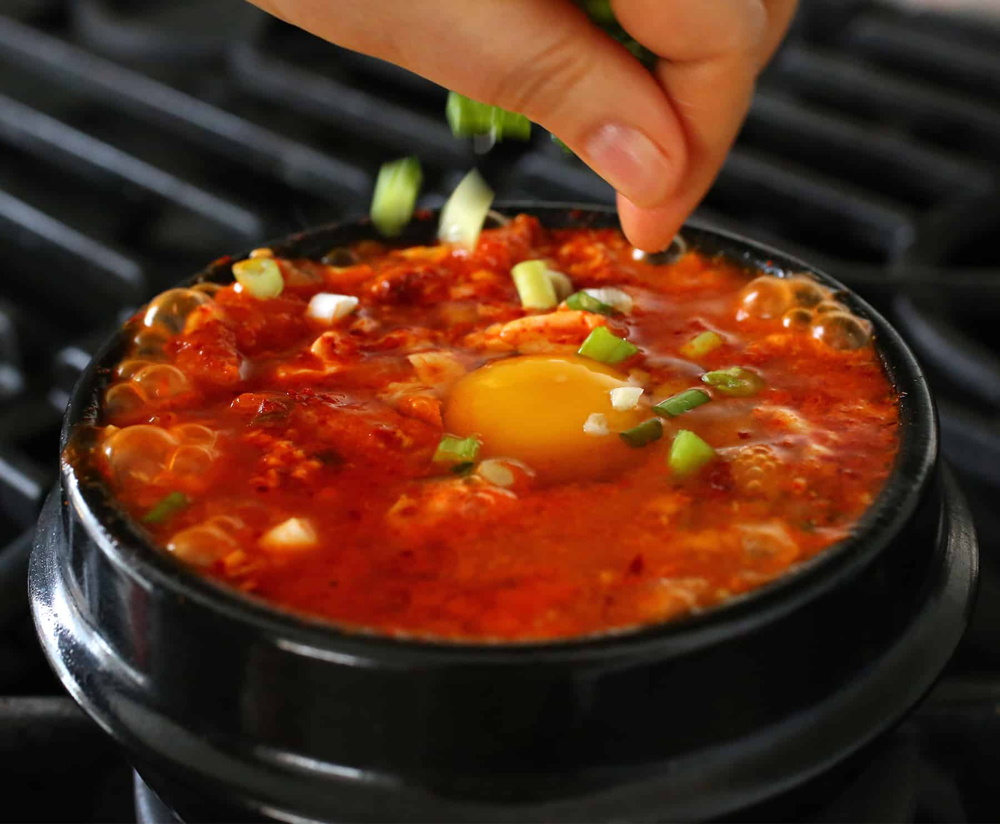

Sundubu Jigae
Home

Description
This is a lovely spicy Korean dish. Yum yum!
Ingredients
7 large dried anchovies, heads and guts removed
5 ounces of radish, peeled, washed, and sliced thinly
1 piece dried kelp (6 x 4 inch)
2 tablespoons Korean hot pepper flakes (gochugaru)
1 teaspoon toasted sesame oil
1 teaspoon vegetable oil
½ cup pork belly, cut into small pieces
¼ cup chopped onion
1 clove minced garlic
1 green onion, chopped
½ cup well-fermented kimchi (4 ounces), chopped
1 teaspoon kosher salt
½ teaspoon sugar
1 tube of soft tofu (sundubu)
1 egg
Steps
Make Anchovy Kelp Stock
Put dried anchovies, radish, dried kelp, and 4 cups of water in a pot. Cover and boil over medium-high heat for 10 minutes until it starts boiling.
Reduce the heat to low and boil another 20 minutes.
Remove from the heat and strain. It will make about 2 cups of stock.
Make the Spicy Paste
Combine the hot pepper flakes and the sesame oil in a small bowl and mix well.
Put it All Together
Heat up a 3-cup earthenware pot (ttukbaegi) on the stove over medium-high heat for about 3 to 4 minutes.
Add vegetable oil, onion, and garlic. Stir for 1 minute.
Add the pork and stir for 3 minutes until it's no longer pink.
Add kimchi and keep stirring for a minute. Add ½ cup anchovy stock, cover, and cook for 7 minutes over medium heat.
Add the salt and sugar, then mix well.
Cut the soft tofu in half and squeeze it into the pot, gently breaking it up.
Put the hot pepper mixture on top and spread it with the spoon.
Crack an egg on top, in the center of the stew. Let it bubble and sizzle for 1 minute.
Serve
Sprinkle with chopped green onion and serve with rice and a few side dishes.